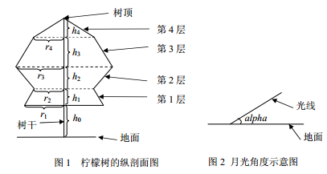

李哲非常非常喜欢柠檬树，特别是在静静的夜晚，当天空中有一弯明月温柔地照亮地面上的景物时，他必会悠闲地
坐在他亲手植下的那棵柠檬树旁，独自思索着人生的哲理。李哲是一个喜爱思考的孩子，当他看到在月光的照射下
柠檬树投在地面上的影子是如此的清晰，马上想到了一个问题：树影的面积是多大呢？李哲知道，直接测量面积是
很难的，他想用几何的方法算，因为他对这棵柠檬树的形状了解得非常清楚，而且想好了简化的方法。李哲将整棵
柠檬树分成了n 层，由下向上依次将层编号为1,2,…,n。从第1到n-1 层，每层都是一个圆台型，第n 层(最上面一
层)是圆锥型。对于圆台型，其上下底面都是水平的圆。对于相邻的两个圆台，上层的下底面和下层的上底面重合
。第n 层(最上面一层)圆锥的底面就是第n-1 层圆台的上底面。所有的底面的圆心(包括树顶)处在同一条与地面垂
直的直线上。李哲知道每一层的高度为h1,h2,…,hn，第1 层圆台的下底面距地面的高度为h0，以及每层的下底面
的圆的半径r1,r2,…,rn。李哲用熟知的方法测出了月亮的光线与地面的夹角为alpha。

为了便于计算，假设月亮的光线是平行光，且地面是水平的，在计算时忽略树干所产生的影子。
李哲当然会算了，但是他希望你也来练练手